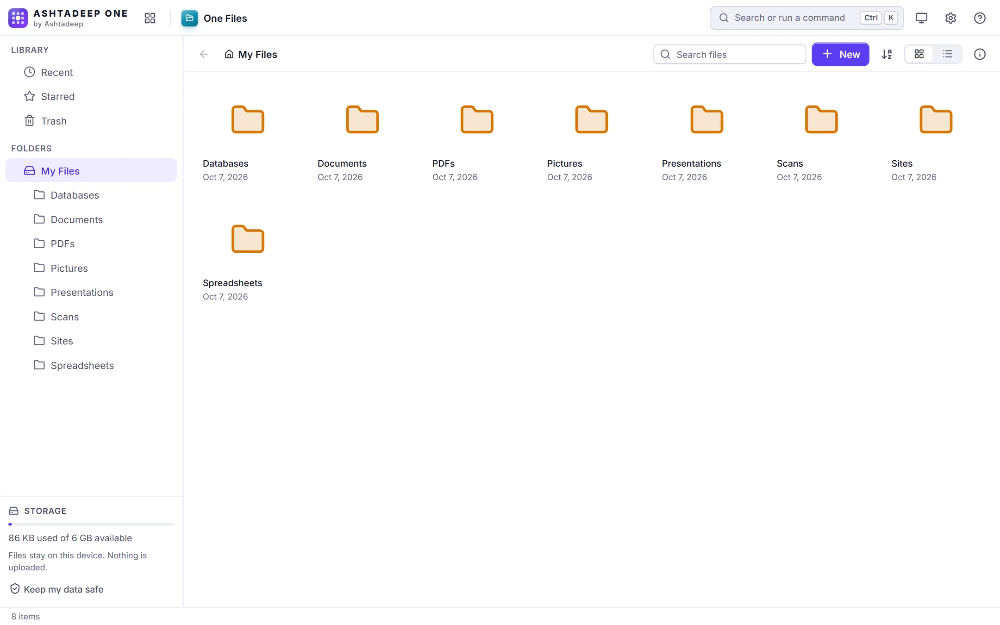

One Files
Manage every file in the workspace: folders, uploads, trash and search.
- Folders: new, rename, move by drag and drop, duplicate
- Upload files and whole folders; download a folder as a ZIP
- Trash with restore, stars, recent files, search, grid and list views
- Open any file with any app that can read it
